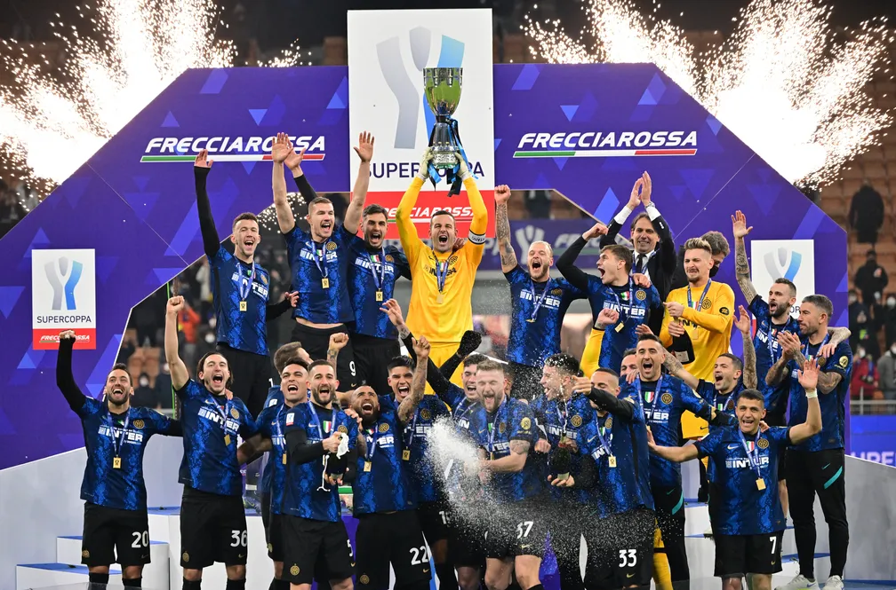
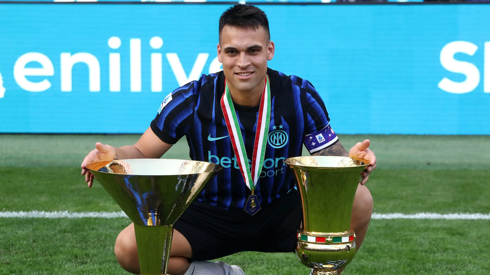
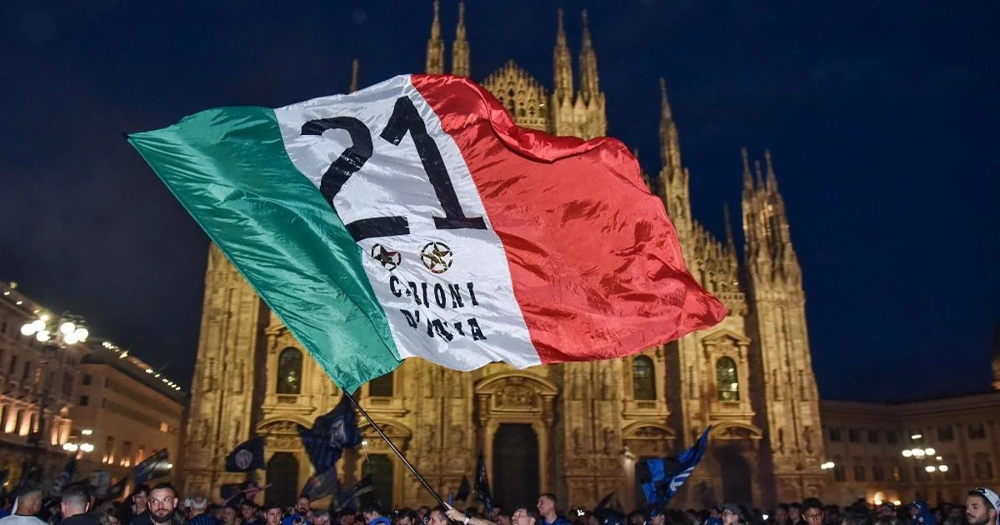

Inter de Milão conquista a Serie A 2025/26 e volta ao topo da Itália
Nerazzurri confirmam título italiano após temporada dominante e superam Juventus e Milan na reta final.

A Inter de Milão é a grande campeã da Serie A 2025/26. Após uma temporada extremamente consistente, os Nerazzurri garantiram matematicamente mais um título italiano e confirmaram o retorno ao protagonismo absoluto do futebol nacional.
A equipe comandada por Simone Inzaghi apresentou um futebol equilibrado durante toda a campanha, combinando solidez defensiva, intensidade no meio-campo e enorme eficiência ofensiva. Lautaro Martínez voltou a ser decisivo na temporada, liderando o ataque da Inter nos momentos mais importantes do campeonato.

A disputa pelo Scudetto permaneceu equilibrada durante boa parte da temporada. Juventus, Milan e Napoli chegaram a pressionar a Inter em diferentes momentos, mas a regularidade da equipe de Milão acabou fazendo a diferença nas últimas rodadas.
Um dos grandes pontos fortes da Inter foi o desempenho defensivo. A equipe terminou o campeonato com uma das melhores defesas da Serie A, além de apresentar enorme controle tático nos confrontos diretos contra os principais rivais italianos.

A conquista gerou grande festa nas ruas de Milão. Milhares de torcedores tomaram a cidade para celebrar mais um Scudetto, reforçando a conexão da torcida com uma geração que recolocou o clube entre os gigantes do futebol europeu.
Além do título nacional, a Inter encerra a temporada fortalecida para continuar brigando também no cenário continental. O clube italiano busca aproveitar a estabilidade do elenco e a experiência acumulada nos últimos anos para voltar a disputar os principais títulos da Europa.